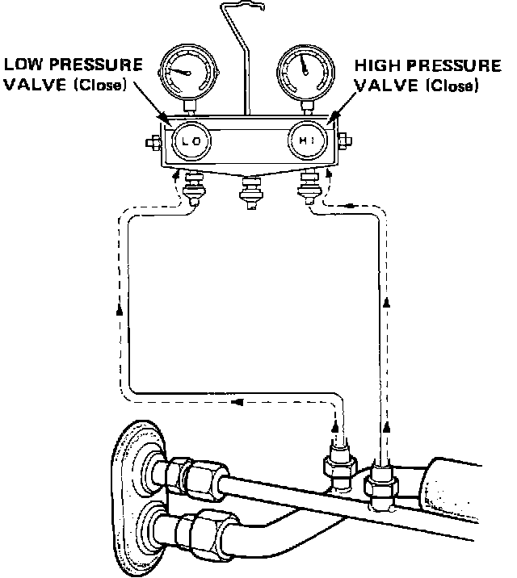

System Pressure Testing and Diagnosis
Pressure Test:

1. Connect gauges and close both valves.
2. Test with hood up, doors and windows open, temperature lever on COLD, function button on VENT, and fan at high speed.
3. Run engine at 1500 rpm for about 10 minutes. Sight glass should be free of bubbles.
4. High pressure reading should be approximately 200 psi (1400 kPa). This will vary depending on ambient temperature and humidity. Testing and Inspection
5. If readings are not correct, System Troubleshooting